Measures of shape¶
The esda.shape module provides statistics that are used in the literature to measure the structure and regularity of polygons. These measures vary from very simple (such as the length-width difference) to very complex (such as the normalized moment of inertia). Regardless, we’ll walk through computing a few of these measures for counties in Virginia.
import geopandas as gpd
import matplotlib.pyplot as plt
import pandas as pd
import shapely
from libpysal import examples
from esda import shape
counties = gpd.read_file(examples.get_path("virginia.shp"))
Why Virginia? The Virginia counties include a mix of regular and irregular shapes due to the mountainous counties in the West. Two counties are multipolygons, which impacts some shape measures. Finally, many of the counties have holes, because they surround “independent cities”, which are county equivalents in Virginia. You can see this in the map below.
counties.plot()
plt.title("Virginia Counties")
Text(0.5, 1.0, 'Virginia Counties')
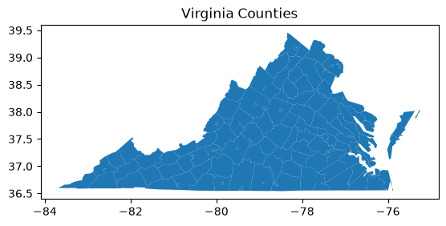
We did not check the coordinate reference system (CRS) of the geodataframe, but we can see from the axes on the plot that the coordinates are in lat-long. We should not use lat-long coordinate systems to calculate shape measures. If you are familiar with Virginia, the above plot may “look right”. This is because Geopandas automatically adjust the aspect ratio of lat-long plots to approximate a conformal projection. We can turn this feature off to see what the unprojected coordinates look like.
ax = counties.plot()
ax.set_aspect("auto")
plt.title("Virginia Counties")
Text(0.5, 1.0, 'Virginia Counties')
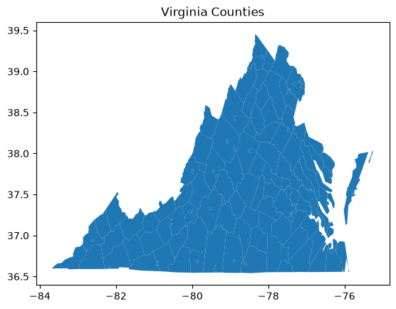
Now we can see that calculating Euclidian distances and areas on unprojected lat-long coordinates will lead to incorrect results. The distorted distances and areas will impact many shape measures. We will see how by introducing a simple shape measure, the difference between the length and width of the shape. The length-width difference is a measure of elongation. As you might guess by comparing the previous two plots, the length-width difference will be heavily affected by the CRS. Let’s see what this looks like numerically.
First, what is an appropriate projection to use? You should use a conformal projection. Conformal projections are often described as “shape-preserving” projections. Since shape is exactly what we are interested in, conformal projections will meet our needs. Keep in mind that projections are parameterized to cover specific areas on the surface of the globe. The larger the area mapped, the more distortion there will be away from the area the projection is intended to cover. Nonetheless, World Mercator will give acceptable results over much of the globe as long as you are not at high latitudes (think of Greenland on a World Mercator map), and calculating measures for a shape that crosses many degrees of latitude.
Let’s reproject the virginia counties to World Mercator.
counties.to_crs(epsg=3395, inplace=True)
counties.plot()
plt.title("Virginia Counties")
Text(0.5, 1.0, 'Virginia Counties')
Now let’s calculate the length-width difference on both the lat-long and Mercator coordinates, and see the difference. The measure is the difference of \(L\), the length of the shape in the North-South direction, and \(W\), the width of the shape in the East-West direction.
lwd_lat_long = shape.length_width_diff(counties.to_crs(epsg=4326))
lwd_mercator = shape.length_width_diff(counties)
df = pd.DataFrame({"lwd_lat_long": lwd_lat_long, "lwd_mercator": lwd_mercator})
df
| lwd_lat_long | lwd_mercator | |
|---|---|---|
| 0 | -0.057152 | 7834.746553 |
| 1 | -0.169186 | -4082.002847 |
| 2 | -0.037289 | 4894.678174 |
| 3 | -0.008430 | 1097.722973 |
| 4 | -0.070480 | 7499.467262 |
| ... | ... | ... |
| 131 | -0.021633 | -1742.967132 |
| 132 | 0.023273 | 4775.942741 |
| 133 | -0.006683 | 111.373760 |
| 134 | -0.015362 | 665.530662 |
| 135 | -0.041515 | -3880.980596 |
136 rows × 2 columns
As the length and width are in the units of the CRS, the scale of the values is completely different. Many of the measures we will explore later have the desirable property of being scale invariant. Let’s normalize the results by dividing by \(L\).
bounds_lat_long = shapely.bounds(counties.to_crs(epsg=4326).geometry)
ymin_lat_long, ymax_lat_long = bounds_lat_long[:, [1, 3]].T
length_lat_long = abs(ymax_lat_long - ymin_lat_long)
bounds_mercator = shapely.bounds(counties.geometry)
ymin_mercator, ymax_mercator = bounds_mercator[:, [1, 3]].T
length_mercator = abs(ymax_mercator - ymin_mercator)
df["scaled_lwd_lat_long"] = df["lwd_lat_long"] / length_lat_long
df["scaled_lwd_mercator"] = df["lwd_mercator"] / length_mercator
df
| lwd_lat_long | lwd_mercator | scaled_lwd_lat_long | scaled_lwd_mercator | |
|---|---|---|---|---|
| 0 | -0.057152 | 7834.746553 | -0.128097 | 0.122680 |
| 1 | -0.169186 | -4082.002847 | -0.361438 | -0.061054 |
| 2 | -0.037289 | 4894.678174 | -0.130227 | 0.119615 |
| 3 | -0.008430 | 1097.722973 | -0.131204 | 0.119460 |
| 4 | -0.070480 | 7499.467262 | -0.142612 | 0.106586 |
| ... | ... | ... | ... | ... |
| 131 | -0.021633 | -1742.967132 | -0.875289 | -0.510157 |
| 132 | 0.023273 | 4775.942741 | 0.285882 | 0.424618 |
| 133 | -0.006683 | 111.373760 | -0.209971 | 0.025320 |
| 134 | -0.015362 | 665.530662 | -0.172870 | 0.054250 |
| 135 | -0.041515 | -3880.980596 | -1.500069 | -1.015612 |
136 rows × 4 columns
We can see that the normalized length-width differences are quite different for most counties, and that for some counties the two measures have opposite signs. Treating the polar coordinates of lat-long as planar coordinates makes these shapes taller. For some counties, \(L<W\) in lat-long, yielding a negative measure, while \(L>W\) in Mercator, yielding a positive measure.
Let’s plot counties with these values. The counties that are tall North-South have a positive (high) length-width difference, while those that are wide East-West have a negative (low) length-width difference.
counties.plot(shape.length_width_diff(counties.geometry))
plt.title("length-width difference")
Text(0.5, 1.0, 'length-width difference')
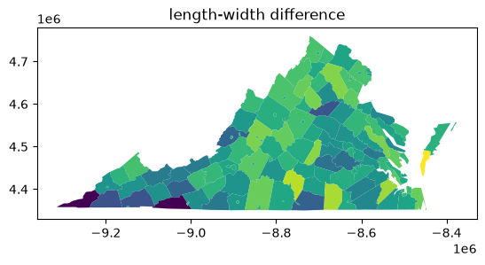
Ideal Shape Measures¶
The next class of shape measures are usually taken to be ideal shape measures of compactness. This means that they construct the relationship between one (or more) aspects of the polygon (such as its perimeter or area) and compares this to an analogous value for an “ideal” shape.
Ideal shapes come in a few flavors.
“relative ideal shapes” are shapes whose properties are fixed relative to the original shape. For example, the
isoperimetric_quotient, compares the area of a polygon to the area of the circle wit the same perimeter as the original polygon. Mathematically, these measures generally are constructed so that they vary between zero and one, and equal \(1\) when the shape is the same as its relative ideal shape. Measures in this family include theisoperimetric_quotientandisoareal_quotient, as well as our implementation of thefractal_dimension, as will be discussed later.“absolute ideal shapes” are shapes that have some fixed, known relationship to the original shape and serve as a “bound” on that shape in some manner. For example, the
convex_hull_ratiocompares the area of a polygon to the area of its convex hull. Since a convex hull is guaranteeed to be at least as large as the original shape, this measure also is between zero and one, with \(1\) meaning that a polygon is its own convex hull. Measures in this family include theboundary_amplitude, theconvex_hull_ratio, theradii_ratio, thediameter_ratio, and theminimum_bounding_circle_ratio.
Absolute Ideal Shape Measures¶
The boundary_amplitude and convex_hull_ratio are two simple and very-related measures of shape regularity. The boundary amplitude is the perimeter of the convex hull divided by the perimeter of the original shape. This varies between zero and one, where \(1\) indicates the case where the polygon is its own convex hull. This is because the convex hull will always have at most the perimeter of the original shape; it will be shorter than the original shape when the shape has many concave parts that cut back into the shape.
In the map below, you can see that the counties with holes in them have very poor boundary_amplitude scores, since the holes add to the perimeter of the shape, but not the perimeter of the convex hull:
counties.plot(shape.boundary_amplitude(counties.geometry))
plt.title("boundary amplitude")
Text(0.5, 1.0, 'boundary amplitude')
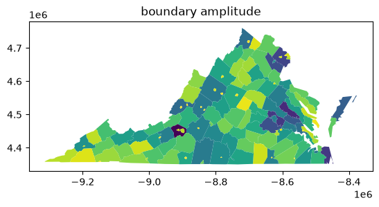
Related, the convex hull ratio is the area of the original shape divided by the area of the convex hull. This varies between zero and one again: since the convex hull always contains the original shape, its area is always larger. The measure, thus, is related to the boundary_amplitude, but will be different for different polygons, since it pertains to area, not perimeter. Generally speaking, perimeter-based measures will be more sensitive to non-convexities than areal-based measures.
counties.plot(shape.convex_hull_ratio(counties.geometry))
plt.title("convex hull areal ratio")
Text(0.5, 1.0, 'convex hull areal ratio')
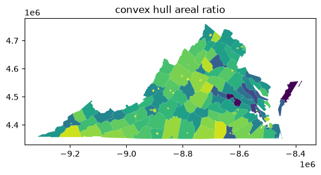
Another measure is the minimum_bounding_circle_ratio, sometimes called the Reock measure after the author of the first journal article in which it was used to analyze congressional districts. The ratio compares the area of the original shape to the area of the smallest circle that can fully enclose the shape. This measure strongly penalizes elongation, as the minimum bounding circle has to get larger and larger to contain the shape. While the method is similar to the convex hull ratio (both compare the area of the shape to the area of a containing shape), the convex_hull_ratio is sensitive to concavities of the perimeter but insensitve to elongation, while the minimum_bounding_circle_ratio is sensitive to elongation but insensitive to concavities of the perimeter. It also varies between zero and one, where \(1\) reflects the case where a polygon is its own bounding circle.
counties.plot(shape.minimum_bounding_circle_ratio(counties))
plt.title("minimum bounding circle ratio")
Text(0.5, 1.0, 'minimum bounding circle ratio')
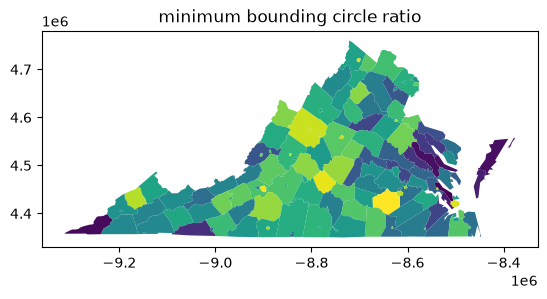
A related measure is the radii_ratio. Instead of comparing the areas of the two shapes, the radii_ratio actually mixes the reference and ideal shape concepts together. It relates the radius of the minimum bounding circle to the radius of the isoareal circle, or the circle that contains the same area as the original shape.
counties.plot(shape.radii_ratio(counties.geometry))
plt.title("radii ratio")
Text(0.5, 1.0, 'radii ratio')
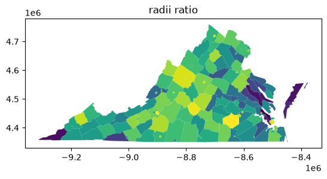
This measure generally performs about the same as the minimum_bounding_circle_ratio, with a bit more sensitivity to concavities in the shape.
plt.scatter(
shape.radii_ratio(counties.geometry),
shape.minimum_bounding_circle_ratio(counties.geometry),
)
plt.plot((0, 1), (0, 1), color="k", linestyle=":")
plt.xlim(0.2, 0.9)
plt.ylim(0.2, 0.9)
plt.xlabel("Radii Ratio")
plt.ylabel("Minimum Bounding Circle Ratio")
Text(0, 0.5, 'Minimum Bounding Circle Ratio')
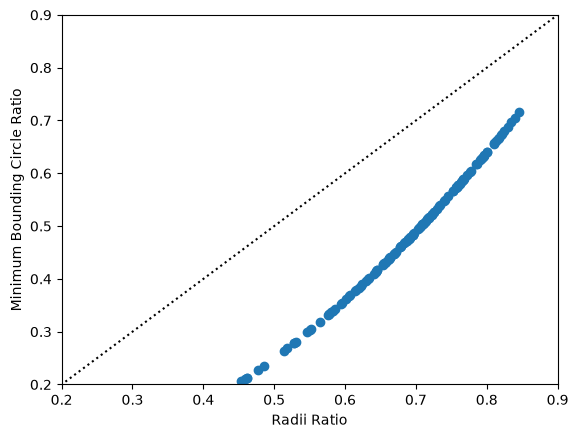
A similar measure to the minimum bounding circle ratio is the diameter ratio. This measures the ratio between a shape’s “longest” and “shortest” diameters. This can be measured as the longest and shortest axis of a shape’s minimum rotated rectangle. Alternatively, one can use the raw bounding box for shapes, but this is biased towards shapes that are east-west and north-south oriented. This again is quite a strong measure of elongation, and shapes with very large differences between their longest and shortest axes will have low scores.
counties.plot(shape.diameter_ratio(counties))
<Axes: >
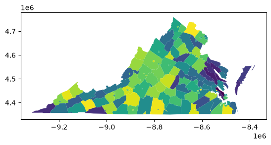
Relative ideal shape measures¶
These classes of shape measures construct a relationship between the observed shape and a different shape with some known relation. As we discussed before with the radii_ratio measure, this often looks like a circle with the same perimeter or area as the source shape.
In the case of the isoareal_quotient, this relates the shape’s perimeter to the perimeter of a circle with the same area as the source shape:
counties.plot(shape.isoareal_quotient(counties))
<Axes: >
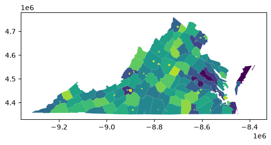
The related measure, the isoperimetric_quotient, relates the shape’s area to the area of a circle with the same perimeter of the original shape.
counties.plot(shape.isoperimetric_quotient(counties))
<Axes: >
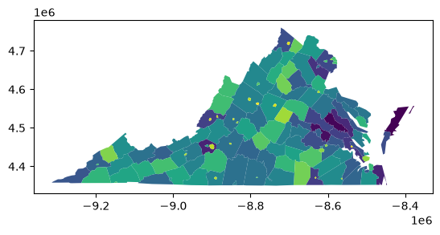
If these two maps look similar to each other, it is because the isoareal_quotient is mathematically equal to the square root of the isoperimetric quotient. They will always rank shapes in the same order, as is demonstrated in the plot below. Of the two, the isoperimetric quotient is more commonly used.
plt.scatter(
shape.isoareal_quotient(counties),
shape.isoperimetric_quotient(counties),
)
plt.plot((0, 1), (0, 1), color="k", linestyle=":")
plt.xlim(0.2, 0.9)
plt.ylim(0.2, 0.9)
plt.xlabel("Isoareal Quotient")
plt.ylabel("Isoperimetric Quotient")
Text(0, 0.5, 'Isoperimetric Quotient')
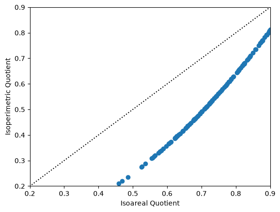
A final related measure is the fractal dimension of a shape. This measures the effective dimension of a shape’s boundary, and generally varies between zero and two, where \(2\) implies a very convoluted boundary, and \(0\) implies a very simple boundary. Hoever, our particular implementation approximates the true fractal dimension by assuming that shapes’ boundaries move along either in a grid or a hexagonal lattice. Thus, the measure is effectively the relationship between a square (or hexagon) and the existing shape.
counties.plot(shape.fractal_dimension(counties, support="hex"))
<Axes: >
counties.plot(shape.fractal_dimension(counties, support="square"))
<Axes: >
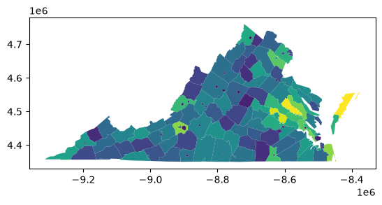
The two are also extremely related:
plt.scatter(
shape.fractal_dimension(counties, support="hex"),
shape.fractal_dimension(counties, support="square"),
)
plt.plot((0, 2), (0, 2), color="k", linestyle=":")
plt.xlim(0.98, 1.08)
plt.ylim(0.98, 1.08)
plt.xlabel("Fractal Dimension (hex)")
plt.ylabel("Fractal Dimension (square)")
Text(0, 0.5, 'Fractal Dimension (square)')
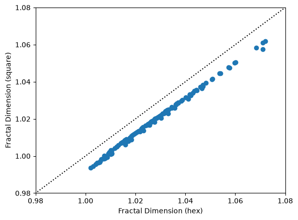
Inertial Measures¶
The moment of inertia is a concept from physics and engineering that measures dispersion of mass around an axis of rotation. This has been adapted to measures of shape in geography. If the shape is treated as of homogeneous density, this is equivalent to the second moment of area. If we have information about the distribution of a quantity of interest, such as population, we can obtain a shape measure that quantifies how dispersed the population is from a reference point, usually the centroid or center of population. The interested reader is referred to:
Li, Wenwen, Michael F. Goodchild, and Richard Church. 2013. “An Efficient Measure of Compactness for Two-Dimensional Shapes and Its Application in Regionalization Problems.” International Journal of Geographical Information Science 27 (6): 1227–50. https://doi.org/10.1080/13658816.2012.752093.
Fan, Chao, Wenwen Li, Levi J. Wolf, and Soe W. Myint. 2015. “A Spatiotemporal Compactness Pattern Analysis of Congressional Districts to Assess Partisan Gerrymandering: A Case Study with California and North Carolina.” Annals of the Association of American Geographers 105 (4): 736–53. https://doi.org/10.1080/00045608.2015.1039109.
We begin with the normalized moment of inertia or normalized second moment of area. The moment of inertia is calculated for the shape, and normalized by the moment of inertia of a circle of the same area. As with some of the other shape measures we have seen, it can vary between zero and one, and equals \(1\) for a perfect circle. The moment of inertia is insensitive to wiggliness of the shape’s perimeter (Li, et al. 2013).
counties.plot(shape.moment_of_inertia(counties, normalize=True))
<Axes: >
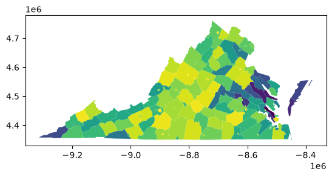
The moment_of_inertia function calculates the moment of inertia about the centroid of each polygon. However, the user can also pass in a reference point or an array-like of reference points of the same length as the geodataframe. In the first case, it calculates the moment of inertia of each shape with resepct to a single reference point. For example, we can calculate the moment of inertia of each county with respect to the centroid of Virginia.
va = counties.dissolve()
va_centroid = va.centroid
ax = va.plot()
va_centroid.plot(ax=ax, color="red")
plt.title("Virginia Centroid")
Text(0.5, 1.0, 'Virginia Centroid')
ax = counties.plot(shape.moment_of_inertia(counties, ref_pt=va_centroid))
va_centroid.plot(ax=ax, color="red")
plt.title("Virginia Counties MOI about Virginia Centroid")
Text(0.5, 1.0, 'Virginia Counties MOI about Virginia Centroid')
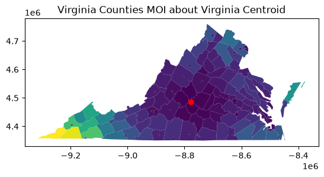
As you can see, the MOI is lower for counties close to the centroid, and higher for counties farther away. In physical terms, you can think about the as swinging on a string about the centroid. The farther away they are, the more rotational force they have, and the higher the moment of inertia. In human geography, this can be used as a measure of population access to a point of interest.
The esda.shape module also has a function to quickly calculate the global moment of inertia for all shapes in a collection. It is more efficient that manually running a dissolve and calculating the MOI on the dissolved shape.
shape.moment_of_inertia_global(counties, normalize=True)
0.58717002611019
Of particular interest is the ability to calculate the moment of inertia for unevenly distributed populations (or other quantities of interest). In this case, the polygons must be assigned to regions, and the moment of inertia is calculated for each region, not each polygon in the collection. Region IDs can be passed in as an array of the same length as the collection (each polygon must be assigned to a region) or as the name of a column of region IDs in the geodataframe.
In order to demonstrate this, we will assign each county to an economic region. We will also add 2020 populations for each county. Since the built-in Virginia dataset is from 2000, we will remove 3 independent cities that merged with their surrounding counties between 2000 and 2020.
# Remove these independent cities
cities_to_remove = ["Bedford City", "Clifton Forge", "South Boston"]
counties_2020 = counties.copy()[~counties["NAME"].isin(cities_to_remove)]
# Function to remove holes
def remove_holes(geom):
if isinstance(geom, shapely.geometry.Polygon):
return shapely.geometry.Polygon(geom.exterior)
elif isinstance(geom, shapely.geometry.MultiPolygon):
return shapely.geometry.MultiPolygon(
[shapely.geometry.Polygon(p.exterior) for p in geom.geoms]
)
else:
return geom
# Boolean mask for rows to modify
mask = counties_2020["NAME"].isin(["Bedford", "Alleghany", "Halifax"])
# Apply transformation only to rows that match the mask
counties_2020.loc[mask, "geometry"] = counties_2020.loc[mask, "geometry"].apply(
remove_holes
)
# Reindex the GeoDataFrame
counties_2020.reset_index(drop=True, inplace=True)
regions = [
"Region 8",
"Region 7",
"Region 8",
"Region 8",
"Region 8",
"Region 7",
"Region 8",
"Region 9",
"Region 7",
"Region 7",
"Region 7",
"Region 7",
"Region 9",
"Region 7",
"Region 8",
"Region 8",
"Region 7",
"Region 7",
"Region 9",
"Region 9",
"Region 6",
"Region 8",
"Region 8",
"Region 9",
"Region 8",
"Region 9",
"Region 6",
"Region 6",
"Region 6",
"Region 6",
"Region 9",
"Region 8",
"Region 6",
"Region 8",
"Region 6",
"Region 9",
"Region 6",
"Region 8",
"Region 8",
"Region 9",
"Region 9",
"Region 5",
"Region 6",
"Region 4",
"Region 9",
"Region 6",
"Region 2",
"Region 6",
"Region 4",
"Region 6",
"Region 2",
"Region 2",
"Region 8",
"Region 2",
"Region 3",
"Region 6",
"Region 3",
"Region 8",
"Region 4",
"Region 4",
"Region 2",
"Region 4",
"Region 2",
"Region 4",
"Region 6",
"Region 4",
"Region 2",
"Region 5",
"Region 1",
"Region 6",
"Region 3",
"Region 4",
"Region 2",
"Region 2",
"Region 5",
"Region 2",
"Region 2",
"Region 3",
"Region 5",
"Region 2",
"Region 1",
"Region 4",
"Region 2",
"Region 4",
"Region 2",
"Region 1",
"Region 1",
"Region 3",
"Region 4",
"Region 5",
"Region 4",
"Region 3",
"Region 4",
"Region 4",
"Region 2",
"Region 5",
"Region 2",
"Region 1",
"Region 5",
"Region 2",
"Region 5",
"Region 1",
"Region 3",
"Region 2",
"Region 3",
"Region 4",
"Region 5",
"Region 1",
"Region 3",
"Region 3",
"Region 1",
"Region 5",
"Region 5",
"Region 1",
"Region 5",
"Region 1",
"Region 1",
"Region 5",
"Region 4",
"Region 3",
"Region 1",
"Region 1",
"Region 3",
"Region 5",
"Region 3",
"Region 5",
"Region 1",
"Region 4",
"Region 3",
"Region 1",
"Region 5",
"Region 3",
"Region 1",
]
populations = [
93355,
427082,
15060,
27981,
44630,
1144474,
41104,
73935,
484625,
235463,
14593,
24478,
7409,
156788,
84739,
23750,
16923,
42674,
53563,
13931,
160520,
2265,
77713,
20850,
51492,
37208,
143876,
27468,
28383,
18683,
113683,
4123,
31541,
25765,
10604,
39012,
9047,
22574,
22578,
45863,
14777,
33326,
12085,
111652,
27764,
6676,
14962,
18232,
25613,
10876,
31385,
5671,
7420,
33875,
16914,
10774,
9745,
6612,
334434,
31074,
4881,
24139,
80254,
227595,
39228,
371610,
16424,
12115,
19857,
8517,
13342,
6686,
16610,
79255,
80046,
55398,
96793,
21932,
70590,
99159,
39933,
42873,
98677,
22944,
25477,
6211,
13920,
15597,
18210,
15564,
28083,
11475,
6552,
33365,
33771,
184774,
54958,
35727,
12556,
16505,
39444,
25635,
60148,
15560,
11990,
10793,
137334,
28219,
33811,
15868,
29585,
17988,
235037,
3620,
457066,
29158,
53913,
96638,
11304,
30431,
22042,
21504,
17606,
251153,
50365,
97299,
15323,
5633,
13584,
6698,
8212,
42239,
17024,
]
counties_2020["region"] = regions
counties_2020["population"] = populations
counties_2020.plot("region")
plt.title("Economic Regions of Virginia")
Text(0.5, 1.0, 'Economic Regions of Virginia')
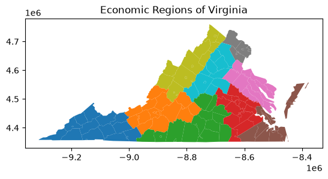
In order to calculate the (unweighted) moment of inertia for each economic region, we pass either the list of region identifiers or the column name to the moment_of_inertia_regions function.
shape.moment_of_inertia_regions(counties_2020, normalize=True, regions="region")
Region 1 0.571706
Region 2 0.747063
Region 3 0.539548
Region 4 0.793634
Region 5 0.323609
Region 6 0.642518
Region 7 0.744163
Region 8 0.477483
Region 9 0.672687
dtype: float64
In order to calculate the mass moment of inertia, we pass in an array-like or column name of weights, which in this case represents the population of each county. We demonstrate the version here which normalizes by comparing with a reference circle having the same mass (population) and area as the shape.
shape.moment_of_inertia_regions(
counties_2020, normalize=True, regions="region", weights="population"
)
Region 1 0.622823
Region 2 0.988687
Region 3 0.549320
Region 4 2.192231
Region 5 0.984835
Region 6 0.568993
Region 7 0.950173
Region 8 0.529857
Region 9 0.796767
dtype: float64
As you can see above, it is possible for the normalized mass moment of inertia to attain a value greater than one. The population (mass) of the reference circle is evenly distributed throughout its area, i.e., it is of uniform density. The shapes we are calculating NMMI for have varying density, and if a shape’s population is concentrated near its centroid, it will be more compact than the reference circle.
Conclusion¶
There are many more shape measures in the esda.shape module that are useful in a large variety of applications. The ones detailed here are the most common ones encountered in literatures on redistricting, which is only one special area where shape measurements are useful. For more information on shape measures, a good introductory conceptual paper on how shape is measured in geography is by Shlomo Angel et al. (2010) .